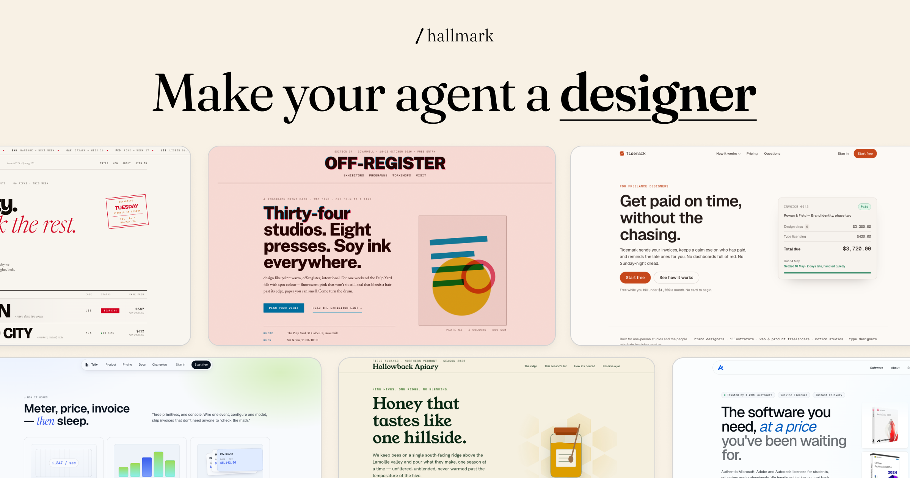
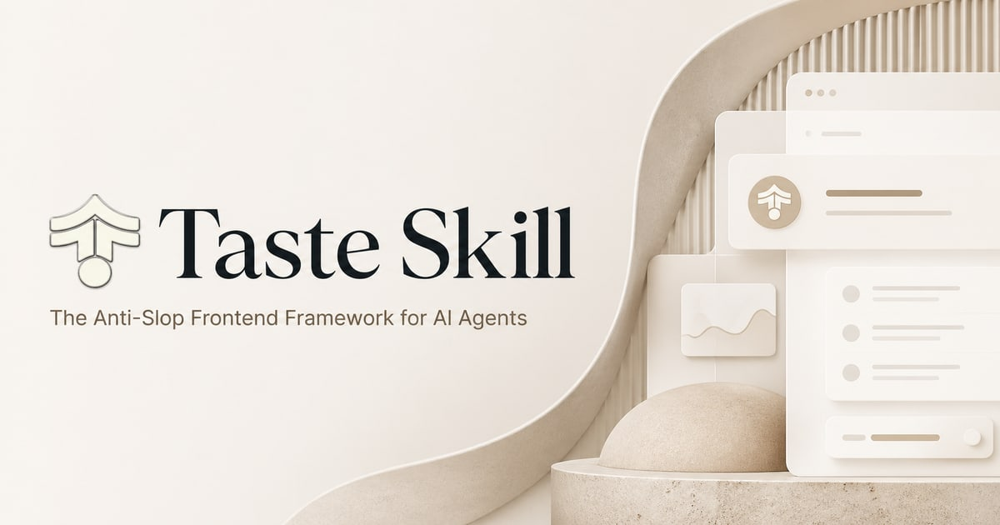

Ming Threads｜3 款 AI UI/UX Design Skills：用 UI/UX Pro Max、Taste Skill、Hallmark 對抗 AI 罐頭味

為什麼保存
這則 Threads 值得歸檔，因為它把「AI coding agent 會寫功能，但 UI 常有 AI 罐頭味」這個痛點，整理成一組可實作的 skill stack：不是再寫一堆「更漂亮、更現代」的空泛 prompt，而是把設計判斷、視覺規範、排版節奏與審查規則封裝成 agent 可重複載入的 Design Skill。
知識庫之前已保存過 Claude Skills 五工具與 taste-skill / humanizer 生態；這篇補上更聚焦的 UI/UX Design Skill 對照，特別是 Hallmark 的 audit / redesign / study 等模式，以及「不要全部安裝」這個很重要的工作流提醒。
Threads 可見內容
canonical：`https://www.threads.com/@ming.nomadlife/post/DbntAARIAvc`。可見資訊：
- 作者：Ming | Nomadic Life | Future of Work 🏖️（@ming.nomadlife）。
- 分類/標籤：AI Threads。
- 可見瀏覽：約 2.0 萬次。
- 可見互動：197 讚、27 回覆、47 轉發、436 分享/引用類互動（Threads UI 位置可能隨版本變動）。
- 主旨：厭倦 Cursor、Claude Code、Windsurf 產出的網頁有「AI 罐頭味 / AI Slop」時，可以幫 AI Agent 載入 UI/UX Design Skill，讓它更懂版面節奏、配色與動效。
作者列出三款：
| Skill | Threads 描述 | 適合情境 |
|---|---|---|
| UI/UX Pro Max | 系統化設計架構師；內建 UI 設計系統庫，包含色彩搭配、字體組合、圖表選用與無障礙 UX 指引。 | Enterprise、規範嚴謹、結構清晰的 UI。 |
| Taste Skill | 精緻動效與排版大師；重視 layout 節奏、留白、字階、微互動，並提到 Design Variance 與動效強度。 | 去除廉價 AI 感，打造極簡奢華或動態流暢的 Web App。 |
| Hallmark | 反罐頭設計叛逆者；內建 57 道 anti-slop 質檢關卡與 20 種主題，支援 default、audit、redesign、study 四種模式。 | 追求強烈視覺個性、不想讓網站看起來像 AI 模板。 |
作者最後提醒：不需要全部安裝；同時載入過多設計規範可能讓 AI 指令衝突，例如極簡風與展覽風互相拉扯。應該挑一個最符合專案風格的設計師 Skill。
官方與 GitHub 查核
本文以留言補充中的 GitHub repo、官方網站與 GitHub API 交叉查核；`kool.ink` 短網址本身是導流短網址服務，不作為官方依據。
| Skill | 官方/Repo | 查核結果 |
|---|---|---|
| UI/UX Pro Max | `nextlevelbuilder/ui-ux-pro-max-skill` | GitHub 可讀；README 描述為提供多平台/多框架 UI/UX design intelligence，包含 reasoning rules 與 UI styles；license 為 MIT。 |
| Taste Skill | `Leonxlnx/taste-skill` / `tasteskill.dev` | GitHub 與官網可讀；官網標題為 The Anti-Slop Frontend Framework for AI Agents，描述支援 Cursor、Claude Code、Codex 等 agent；license 為 MIT。 |
| Hallmark | `Nutlope/hallmark` / `usehallmark.com` | GitHub 與官網可讀；README 描述為 Claude Code、Cursor、Codex 的 anti-AI-slop design skill；由 Together AI 製作；license 為 MIT。 |
GitHub API 查核當下的 repo 熱度：
- `nextlevelbuilder/ui-ux-pro-max-skill`：約 113,451 stars、12,141 forks。
- `Leonxlnx/taste-skill`：約 71,874 stars、4,934 forks。
- `Nutlope/hallmark`：約 21,672 stars、1,099 forks。
這些數字會變動，也可能受到 GitHub 生態的曝光與行銷活動影響；正式採用時應重新檢查 repo 活躍度、issue、release、安裝方式與安全性。

三款怎麼選
### UI/UX Pro Max：規範型設計資料庫
適合「要讓 agent 有設計系統思維」的專案，例如 SaaS 後台、管理介面、課程平台、資料儀表板。它的價值在於讓 AI 不只知道某個頁面要好看，也知道該如何選色、配字體、做圖表與考慮 accessibility。
### Taste Skill：審美與節奏感
適合「功能已經能跑，但畫面太模板」的前端。它重視排版節奏、留白、字階與微互動，對 landing page、作品集、工具型 Web App 很實用。若欒帥要快速把 AI 學習雷達、課程頁或 demo site 做得更有設計感，Taste Skill 可作為審美校準層。
### Hallmark：強風格與反模板審查
Hallmark 的特點是把 anti-slop 變成明確模式：
- default：產生新 UI。
- audit：審查既有 code，只給 punch list，不直接修改。
- redesign：保留文案、資訊架構與品牌，重做視覺結構。
- study：從截圖或 URL 抽取設計 DNA，但避免像素複製與付費模板抄襲。
這很適合做「先審查，再重設計」的 agent 工作流：先讓 Hallmark audit 現有頁面，再讓 coding agent 依照 punch list 改版，最後人工看截圖驗收。
對欒帥的可用工作流
- 先定專案風格：Enterprise、極簡高質感、實驗性強視覺，三選一，不要同時堆所有 skill。
- 讓 agent 先產出截圖或本機預覽，再用 design skill 做 audit；不要只看 code diff。
- 對公開頁面建立固定 QA：手機版、桌機版、contrast、字級、空狀態、錯誤狀態、loading、互動動效。
- 把設計修正寫回專案自己的 `DESIGN.md` 或 skill，而不是每次重複口頭提醒。
- 若用在課程展示，可把同一個 landing page 分別丟給三款 skill，讓學員比較「設計規範」如何改變 AI 產物。
風險與限制
- 「AI Slop」「設計師靈魂」是社群行銷 framing，不代表安裝後一定能產生高品質 UI。
- Design Skill 會改變模型偏好，但不能取代使用者研究、資訊架構、品牌策略與人工審美判斷。
- 同時載入多個互相衝突的設計規範，可能讓 agent 產生折衷但不一致的結果。
- 使用前應檢查 repo 安裝腳本與權限，不要直接執行不明 shell 指令或給予過高檔案/系統權限。
- 若 skill 內含外部服務、遙測或生成圖片功能，需再檢查隱私、資料上傳與商用素材授權。
- Threads 需登入才能完整查看互動；本文根據公開可見頁面、DOM metadata、GitHub API 與官方網站整理。
來源
- Threads：<https://www.threads.com/@ming.nomadlife/post/DbntAARIAvc>
- UI/UX Pro Max：<https://github.com/nextlevelbuilder/ui-ux-pro-max-skill>
- Taste Skill GitHub：<https://github.com/Leonxlnx/taste-skill>
- Taste Skill 官網：<https://www.tasteskill.dev/>
- Hallmark GitHub：<https://github.com/Nutlope/hallmark>
- Hallmark 官網：<https://www.usehallmark.com/>
- 相關既有條目：<https://m11808008.github.io/hermes/knowledge-base/articles/2026/07/2026-07-22-facebook-s-ai-lab-claude-skills-five-tools.html>
- 相關既有條目：<https://m11808008.github.io/hermes/knowledge-base/articles/2026/07/2026-07-07-aiposthub-remove-ai-flavor-humanizer-skills-guide.html>